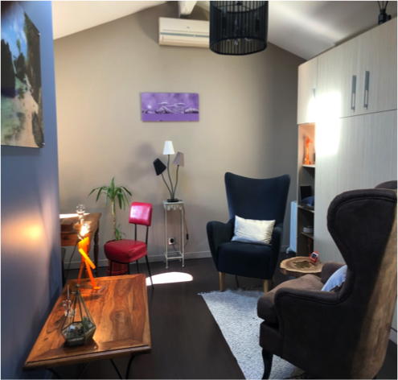

Vous souffrez d'apnées du sommeil mais ne supportez pas votre masque CPAP ? L'hypnose Ericksonienne agit sur les freins psychologiques qui empêchent l'observance du traitement — et les résultats sont mesurables.
*Observation menée depuis 2019 en partenariat avec des prestataires de santé à domicile (PSAD).
L'apnée du sommeil se traite efficacement avec une ventilation en pression positive (CPAP). Pourtant, une part significative des patients abandonne ce traitement — non pas parce qu'il ne fonctionne pas, mais parce qu'ils ne parviennent pas à tolérer le port du masque.
Les raisons sont rarement mécaniques. Elles sont psychologiques : une claustrophobie latente activée par le masque, une difficulté à accepter l'image renvoyée, ou simplement une résistance inconsciente à un objet perçu comme intrusif.
C'est précisément là qu'intervient l'hypnose Ericksonienne. En travaillant sur l'inconscient — là où se logent ces résistances — elle permet de lever les freins qui bloquent l'observance, souvent en une à deux séances.

Derrière le rejet du masque se cachent des mécanismes psychologiques bien identifiés.
La sensation d'enfermement provoquée par le masque réactive une peur profonde, souvent inconsciente, de l'espace confiné.
Accepter de dormir appareillé implique une transformation de l'image corporelle nocturne difficile à intégrer pour certains patients.
Le bruit, la pression, la sensation mécanique du masque peuvent devenir insupportables lorsqu'une résistance inconsciente s'y ajoute.
Certains patients sont orientés sans diagnostic d'apnées confirmé mais présentent des troubles : somnambulisme, terreurs nocturnes, éveils nocturnes fréquents.
Le traitement est compris et accepté rationnellement — mais une part du patient s'y oppose malgré tout. L'hypnose agit à ce niveau.
Le suivi médical ne couvre pas toujours la dimension psychologique de l'observance. C'est le chaînon manquant que l'hypnose vient compléter.
Dom'Air Santé, SOS Oxygène, ASDIA ou votre pneumologue vous orientent vers le cabinet. Un compte-rendu peut être transmis au prescripteur si souhaité.
Nous identifions ensemble la nature du frein : claustrophobie, image de soi, résistance inconsciente. Cette étape oriente le travail hypnotique.
La séance travaille directement sur le mécanisme identifié. Vous restez pleinement conscient et acteur du processus.
Dans la majorité des cas, 1 à 2 séances suffisent. Un bilan à distance permet de mesurer l'évolution de l'observance.
Depuis 2019, je travaille en partenariat avec les principaux prestataires de santé à domicile de la région pour les patients apnées non observants.
Partenariat historique — Symposia 2019 (Andorra) et 2023. Présentation des résultats aux pneumologues et ORL des Pyrénées Atlantique et Hautes-Pyrénées.
Atelier "Hypnose & Trouble du Sommeil" au Congrès Cardiosleep (Corse, 2022). Collaboration active sur l'accompagnement des patients apnées.
Partenaire PSAD pour l'accompagnement des patients non observants dans la région Nouvelle-Aquitaine.
Prenez rendez-vous directement ou contactez-moi pour discuter d'une orientation.
Prendre rendez-vous